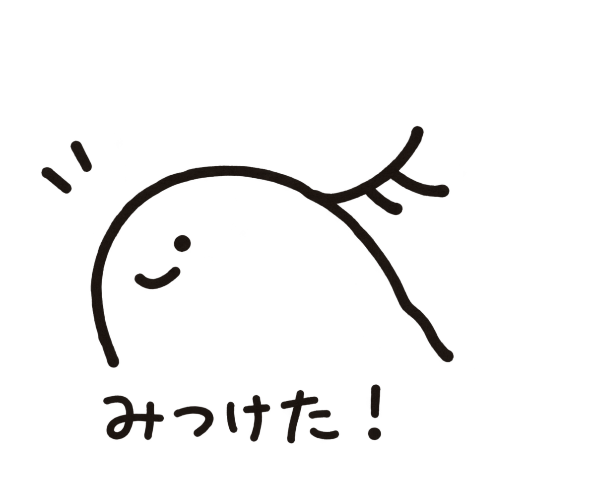

Registration & Presentation Preferences
Registration deadline: September 30

Please complete the registration form if you would like to attend the 15th Yamada Conference — Brain Construction Meeting.
The form also asks whether you wish to give a presentation.
Presentation Preference
- Short talk (15 minutes including Q&A)
- Poster presentation
- Attendance only
We plan to offer approximately 12 short-talk slots and 20 poster-presentation slots. If there are more applicants than available slots, we may need to make adjustments.